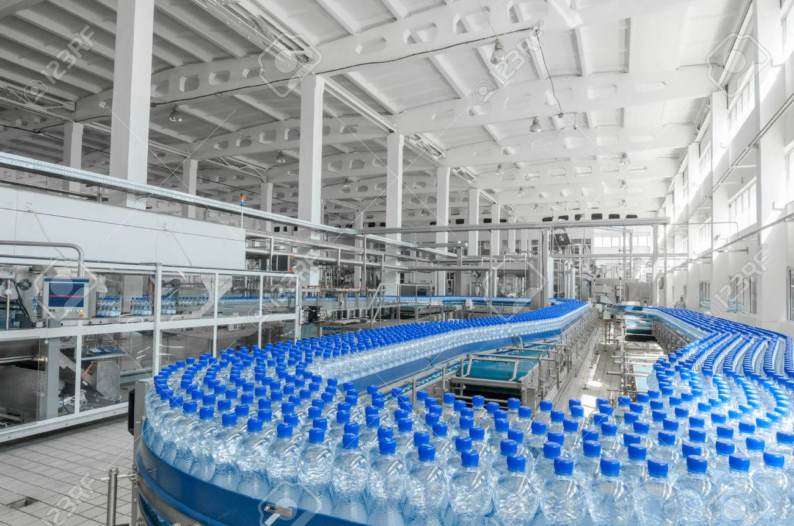

Plastic Production
Plastics have become an integral part of our modern economy and thus plastic production and transportation have grown to be extremely abundant in the United States. Shown on the map are locations of plastic manufacturing sites: places where these plastics are machined, moulded, fabricated, and compounded with other materials. Immense quantities of preproduction plastics, nurdles, are transported or created at these locations. These products, plastics, and byproducts are often either lost in transportation or carried directly into waterways eventually leading to the oceans.